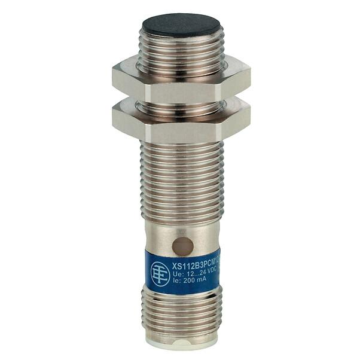
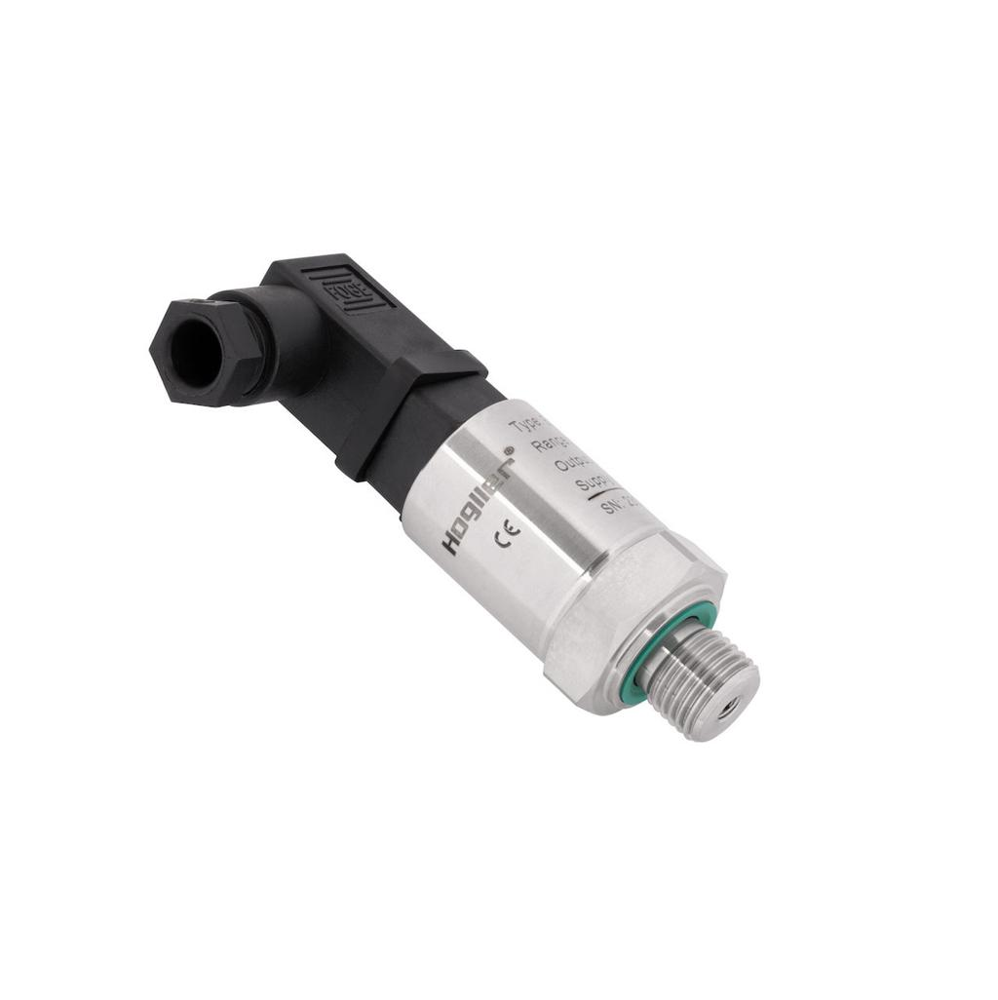

1. Definition
PLC digital and analog modules interface field devices with the controller using different types of electrical signals.
Digital modules process discrete states, typically representing ON and OFF.
Analog modules process continuously varying electrical signals and convert them into numerical values that the PLC program can use.
The essential difference is the information being represented:
- Digital: Is the sensor active or inactive?
- Analog: What pressure, temperature, position, speed, or other measured value is present?
For example, an automotive production station may use a digital proximity sensor to confirm clamp position and an analog pressure transmitter to measure the actual pneumatic pressure.
2. Digital versus analog signals

Digital signal
A proximity sensor typically indicates whether a target has been detected. The PLC interprets the input as an inactive or active state, subject to the sensor's electrical design and configured logic.
Example: PART_PRESENT = TRUE

Analog signal
A pressure transmitter produces a signal corresponding to the measured pressure over a configured range.
Example: AIR_PRESSURE = 5.8 bar
The signal's electrical form and the engineering value it represents are different concepts. A 12 mA signal, for example, is an electrical measurement. Its meaning in bar depends on the transmitter's configured measurement range and scaling.
3. Digital input modules
A digital input module detects discrete electrical states from field devices.
Typical field devices include:
- Pushbuttons and selector switches.
- Inductive and photoelectric sensors.
- Limit switches.
- Pressure switches and level switches.
- Contactor auxiliary contacts.
- Drive-ready and drive-fault signals.
Common DC signal levels
A common industrial standard is 24 V DC digital I/O, although other voltage levels and AC input modules also exist.
| Field condition | Typical 24 V DC input interpretation |
|---|---|
| Input voltage below the OFF threshold | OFF |
| Input voltage above the ON threshold | ON |
| Voltage between defined thresholds | State may be indeterminate or dependent on the module's electrical characteristics |
The ON and OFF thresholds are specified by the manufacturer. Do not assume that every module changes state at exactly 0 V or 24 V.
Digital input modules may include electrical isolation, filtering, status LEDs, and channel diagnostics.
Example: proximity sensor
A sensor detects a metal component on a fixture.
Metal component detected
|
v
Sensor output switches
|
v
Digital input channel becomes active
|
v
PLC tag PART_PRESENT = TRUE
If the PLC tag remains OFF, check the sensor supply, output type, wiring, input common, module LED, channel configuration, and address mapping.
An active input does not independently prove that the mechanical condition is correct. It proves only that the configured input data indicates an active state.
4. Digital input wiring: PNP and NPN
PNP and NPN describe common transistor-output arrangements used by DC sensors.
| Characteristic | PNP sensor | NPN sensor |
|---|---|---|
| Active output behavior | Sources positive voltage toward the load/input | Sinks current toward 0 V |
| Common description | Sourcing output | Sinking output |
| Typical compatible input arrangement | Sinking input circuit | Sourcing input circuit |
The exact wiring depends on the sensor and input module. Check the manufacturer's circuit diagram, terminal arrangement, and input specifications before connecting them.
Do not confuse PNP/NPN with NO/NC:
- PNP/NPN describes the sensor's output electronics.
- NO/NC describes the switching arrangement or normal contact state.
- Sourcing/sinking describes the current relationship in the circuit.
These are separate characteristics.
5. Digital output modules
Digital output modules switch electrical signals to command discrete actions.
Common applications include:
- Solenoid valves.
- Interposing relays.
- Contactor coils, where the circuit is suitably rated.
- Indicator lamps and stack lights.
- Drive enable or reset inputs.
- Pneumatic and hydraulic control interfaces.
Main output types
| Output type | Switching method | Typical characteristics |
|---|---|---|
| Relay | Mechanical contacts | Can switch supported AC or DC loads; contact wear and switching speed matter |
| Transistor | Electronic semiconductor switching | Commonly used for DC loads; polarity and sourcing/sinking type matter |
| Triac | Electronic AC switching | Used with supported AC loads; leakage current and minimum-load behavior can matter |
Output types are not interchangeable. A transistor output intended for DC switching must not be treated as a general-purpose AC output.
Important output ratings
Before connecting a load, verify:
- Rated operating voltage.
- Continuous current per channel.
- Maximum current per module or output group.
- Inrush current and load characteristics.
- Switching frequency and response time.
- Short-circuit and overload protection.
- Isolation and common-terminal arrangement.
- Required suppression for inductive loads.
A module may support a certain current per channel but have a lower total current limit for a group of channels. Both limits matter.
Example: solenoid valve
PLC command CLAMP_SOLENOID = TRUE
|
v
Output channel switches
|
v
Solenoid coil receives electrical power
|
v
Valve changes state
|
v
Pneumatic cylinder moves
If the PLC output tag is ON but the cylinder does not move, the cause may be an output-channel fault, missing field supply, broken wire, failed coil, valve fault, loss of air pressure, or a mechanical obstruction.
The program command is only one link in the chain.
6. Analog input modules
Analog input modules receive electrical signals representing continuously varying measurements.
Common applications include:
- Pressure and vacuum measurement.
- Temperature measurement.
- Flow and level measurement.
- Load and force measurement.
- Position feedback.
- Speed feedback from a compatible analog-output device.
Common analog signal ranges include:
| Signal type | Common range | General use |
|---|---|---|
| Current | 4–20 mA | Industrial transmitters |
| Current | 0–20 mA | Measurement and control systems |
| Voltage | 0–10 V | Sensors, references and control signals |
| Voltage | 1–5 V | Certain transmitter and instrumentation systems |
| Voltage | ±10 V | Bipolar references and measurement applications |
These are common examples, not a universal list of ranges supported by every module.
The input channel must be configured for the correct signal type and range. A module configured for 0–10 V will not correctly interpret a 4–20 mA transmitter simply because the wiring terminals are available.
Current versus voltage signals
Current signals, particularly 4–20 mA, are widely used in industrial environments because they can be practical for transmitting measurements over field wiring and can be less sensitive to voltage drops than voltage signals in appropriately designed loops.
Voltage signals, such as 0–10 V, are also common but require attention to signal reference, grounding, cable routing, and electrical noise.
Neither signal type is automatically immune to wiring faults or interference.
7. Understanding 4–20 mA
A 4–20 mA signal represents a measured value using a current range.
Suppose a pressure transmitter is configured for 0–10 bar.
| Current | Pressure |
|---|---|
| 4 mA | 0 bar |
| 8 mA | 2.5 bar |
| 12 mA | 5 bar |
| 16 mA | 7.5 bar |
| 20 mA | 10 bar |
For a linear transmitter:
Where:
- \(PV\) is the process value.
- \(I\) is the measured current in mA.
- \(EU\_{\min}\) is the lower engineering-unit limit.
- \(EU\_{\max}\) is the upper engineering-unit limit.
For the 0–10 bar example, at 12 mA:
Why does the signal start at 4 mA instead of 0 mA?
The 4 mA lower endpoint is called a live zero. It distinguishes the normal minimum measurement from a zero-current condition.
For example, a 4–20 mA transmitter normally produces 4 mA when measuring the bottom of its configured range. A current near 0 mA may indicate a broken wire, lost loop power, or another fault.
However, fault detection is not automatic in every installation. It depends on the transmitter, input module, configured fault thresholds, and loop design.
8. Analog output modules
Analog output modules generate variable electrical signals to control compatible devices.
Typical applications include:
- Speed reference to a variable-frequency drive.
- Command to a proportional pressure valve.
- Reference signal to a compatible servo or motion interface.
- Flow-control setpoint.
- Position command to a supported analog-controlled device.
For example, a drive may accept a 4–20 mA speed reference mapped to 0–50 Hz.
| Output current | Example frequency command |
|---|---|
| 4 mA | 0 Hz |
| 8 mA | 12.5 Hz |
| 12 mA | 25 Hz |
| 16 mA | 37.5 Hz |
| 20 mA | 50 Hz |
This mapping is illustrative. Actual behavior depends on the drive's configuration, the analog input scaling, and any limits or overrides.
An analog output value is a command, not proof that the controlled device achieved the requested value. Actual speed may require separate feedback or communication data.
9. Analog signal conversion: raw value to engineering units
An analog input module converts its measured electrical signal into a digital numerical representation. The PLC program then converts that representation into an engineering value when necessary.
Pressure in the process
|
v
Pressure transmitter
|
v
4–20 mA electrical signal
|
v
Analog input module
|
v
Raw digital value
|
v
PLC scaling calculation
|
v
AIR_PRESSURE = 5.0 bar
A common linear scaling equation is:
Where:
- \(Raw\) is the module's numerical reading.
- \(Raw\_{\min}\) and \(Raw\_{\max}\) are the configured raw endpoints.
- \(EU\_{\min}\) and \(EU\_{\max}\) are the engineering-unit endpoints.
Do not assume that all PLC modules use the same raw numerical range. The representation may vary with module family, resolution, configuration, data format, and whether the platform provides raw or already-scaled values.
Incorrect scaling can make a healthy transmitter appear to report the wrong physical value.
10. Resolution, accuracy and response time
These terms describe different properties of a module.
| Term | Meaning | Practical consequence |
|---|---|---|
| Resolution | Smallest distinguishable digital increment | Determines how finely the signal can be represented |
| Accuracy | Closeness of the reported value to the actual value under specified conditions | Affects confidence in the measurement |
| Repeatability | Ability to produce consistent readings under the same conditions | Helps evaluate measurement stability |
| Response time | Time taken for a signal change to be reflected in the module's data | Affects how quickly the control system can react |
| Input filtering | Suppression or averaging of rapid changes and noise | Can improve stability but delay detection |
| Isolation | Electrical separation between specified circuits or channels | Helps manage certain electrical interference and fault risks |
A high-resolution module is not necessarily highly accurate. It may represent many numerical increments while still having significant measurement error.
Similarly, increasing input filtering may make a noisy signal look stable but can delay recognition of a genuine process change.
For fast events, check module response time, filtering, PLC scan behavior, and network update time together.
11. Specialized measurement modules
Some field signals require more than an ordinary voltage or current input.
| Module or interface | Purpose | Example |
|---|---|---|
| RTD module | Measures resistance from resistance temperature detectors | Pt100 temperature sensor |
| Thermocouple module | Measures thermocouple voltage and converts it to temperature | Furnace or process temperature |
| High-speed counter | Counts fast pulses beyond the practical limits of ordinary input processing | Encoder or pulse sensor |
| Encoder interface | Reads position or speed information from supported encoders | Rotating axis feedback |
| Load-cell module | Measures small sensor signals using a suitable measurement interface | Press force or component weight |
| Safety I/O | Supports a certified safety-control architecture | Guard or safety-device monitoring |
These modules can have special wiring, calibration, filtering, reference-junction compensation, timing, or safety requirements.
For example, a thermocouple produces a small voltage related to temperature difference. It should not be treated as an ordinary 0–10 V sensor without the appropriate measurement interface and configuration.
12. Noise, shielding and grounding
Analog signals can be affected by electrical interference, particularly around VFDs, servo drives, contactors, welding equipment, and high-current power cables.
Common precautions include:
- Use the cable type specified for the signal and installation.
- Separate low-level signal wiring from power and motor cables where required.
- Follow the manufacturer's shielding and shield-termination recommendations.
- Use the correct signal reference and grounding arrangement.
- Avoid creating unintended ground loops.
- Verify transmitter power, terminal connections, and module configuration.
- Inspect trends and raw values before changing scaling.
Shielding is not a substitute for correct wiring. Incorrectly terminated shields or reference connections can introduce problems instead of solving them.
13. Common digital and analog I/O faults
| Symptom | Possible cause | What to verify |
|---|---|---|
| Digital input does not turn ON | Sensor fault, missing supply, incorrect wiring, incompatible output type | Sensor supply and output, input common, terminal voltage, module LED |
| Digital output does not operate the load | Missing supply, damaged output channel, wiring fault, overload | Output status, field supply, fuse, load current and module diagnostics |
| Analog input is fixed at its minimum | Broken loop, wrong signal range, missing transmitter supply, incorrect wiring | Loop current, wiring polarity, module range, raw value |
| Analog value is above the expected range | Wrong scaling, over-range signal, wiring or configuration fault | Transmitter range, raw data, configured endpoints and diagnostics |
| Analog reading fluctuates | Noise, poor termination, unstable supply, grounding issue | Signal trend, cable routing, shield arrangement, supply stability |
| Correct raw value but incorrect engineering value | Scaling equation or engineering limits are wrong | Raw endpoints, units, formula, transmitter range |
| Analog output command changes but process does not | Incorrect output range, broken circuit, incompatible receiving device, process limitation | Output current or voltage, receiver configuration, wiring and device status |
Do not immediately replace the module when a signal looks wrong. Establish whether the fault originates in the field device, wiring, module configuration, raw data, scaling, program logic, or receiving device.
14. Practical example: pressure monitoring in a production station
Assume a station uses a pressure transmitter with a range of 0–10 bar and a 4–20 mA output.
The PLC project contains:
| Item | Example |
|---|---|
| Field device | Pneumatic pressure transmitter |
| Signal type | Analog input, 4–20 mA |
| Engineering range | 0–10 bar |
| PLC tag | AIR_PRESSURE |
| Measured current | 12 mA |
| Calculated pressure | 5 bar |
The troubleshooting process should establish:
- Is the transmitter powered correctly?
- Is the loop current consistent with the actual pressure?
- Is the input channel configured for 4–20 mA?
- Is the raw reading plausible for that module and configuration?
- Is the scaling correct for 0–10 bar?
- Is the program comparing the value against the correct limits?
- Does the PLC display agree with an independent measurement, where appropriate?
This separates an electrical measurement problem from a configuration or program problem.
15. Practical maintenance checklist
Before commissioning or troubleshooting a digital or analog module, verify:
- Module model, channel count, and supported signal types.
- Rated voltage or current range.
- Wiring diagram, terminal numbers, and common connections.
- PNP/NPN compatibility for digital sensor circuits.
- Output type, load rating, and suppression requirements.
- Analog range, transmitter range, and scaling endpoints.
- Channel isolation, filtering, and response-time requirements.
- Module status, channel indicators, and diagnostic codes.
- PLC address, tag mapping, and program usage.
- Updated electrical drawings, I/O list, and hardware configuration.
For live machinery, use approved isolation and testing procedures. Do not force outputs or bypass safety functions to test a signal.
16. Interview questions
Q1. What is the difference between digital and analog I/O?
Digital I/O represents discrete states, typically ON and OFF. Analog I/O represents a varying measurement or command over a defined electrical range.
Q2. Why is 4–20 mA widely used in industry?
It is a common industrial current-loop standard. Its live-zero arrangement can help distinguish the normal minimum measurement from a zero-current condition, and current signaling can be practical over field wiring.
Q3. Does a 16-bit module automatically provide high accuracy?
No. Resolution and accuracy are different specifications. Accuracy also depends on the module's measurement performance, operating conditions, sensor, wiring, and calibration.
Q4. Why can an analog value be incorrect even when the transmitter is healthy?
The module may be configured for the wrong signal range, the scaling may be incorrect, or the wrong channel or raw data representation may be used.
Q5. Why can a digital output LED be ON while the actuator remains OFF?
The LED does not verify the entire external circuit. The field supply, fuse, wiring, load, or actuator may still be faulty.
Q6. What is the difference between an ordinary analog input and an RTD module?
An ordinary analog input commonly measures supported current or voltage signals. An RTD module is designed to measure the resistance characteristics of a temperature sensor and convert them into temperature data.
Final mental model
DIGITAL INPUT
Field state -> Electrical ON/OFF -> DI module -> PLC data
ANALOG INPUT
Physical measurement -> Current/voltage -> AI module
-> Raw data -> Scaling -> Engineering value
DIGITAL OUTPUT
PLC command -> DO module -> Electrical ON/OFF -> Actuator
ANALOG OUTPUT
PLC setpoint -> AO module -> Current/voltage -> Receiving device
The key maintenance principle is to distinguish the physical quantity, the electrical signal, the module's numerical data, and the engineering value used by the program. They are related, but they are not the same thing.
The next topic is 05_Remote_IO: Distributed racks over a network.